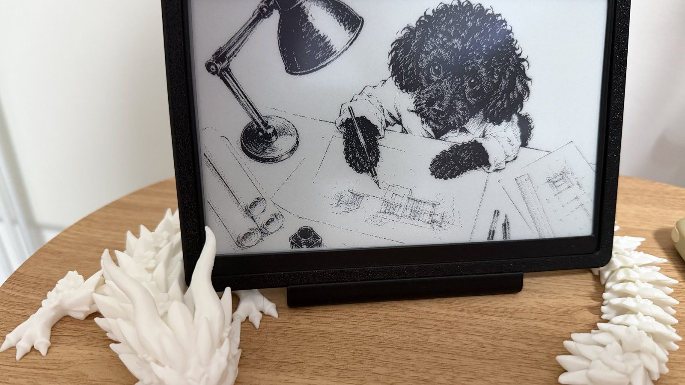
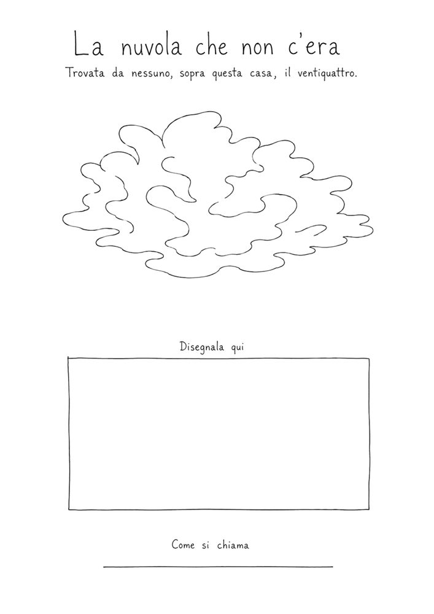
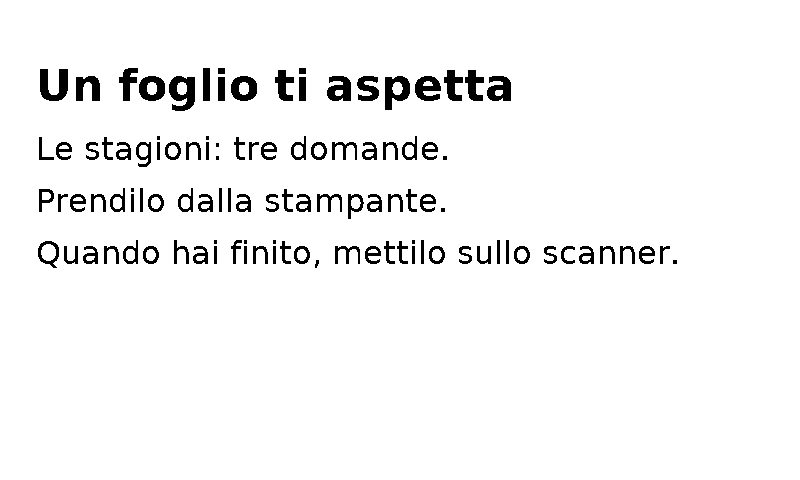
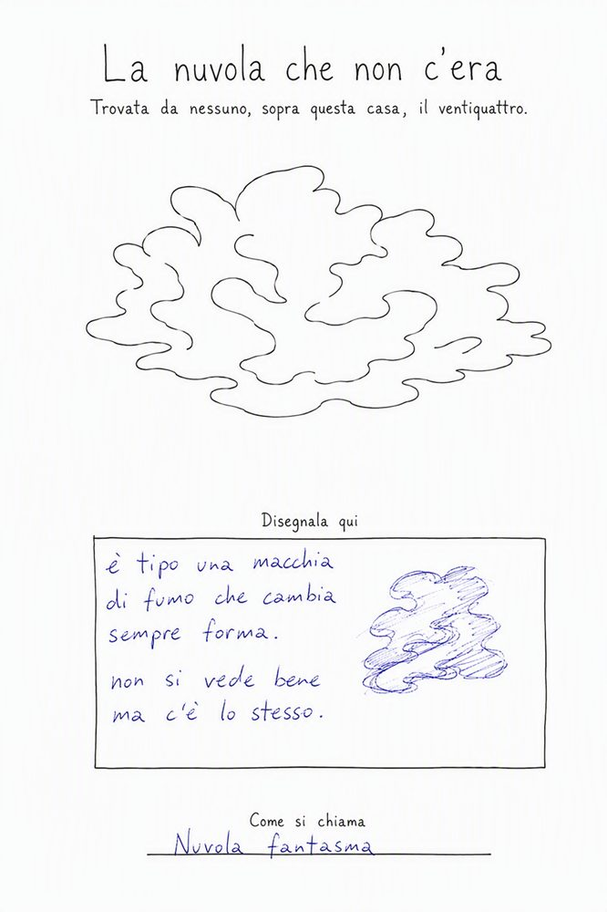
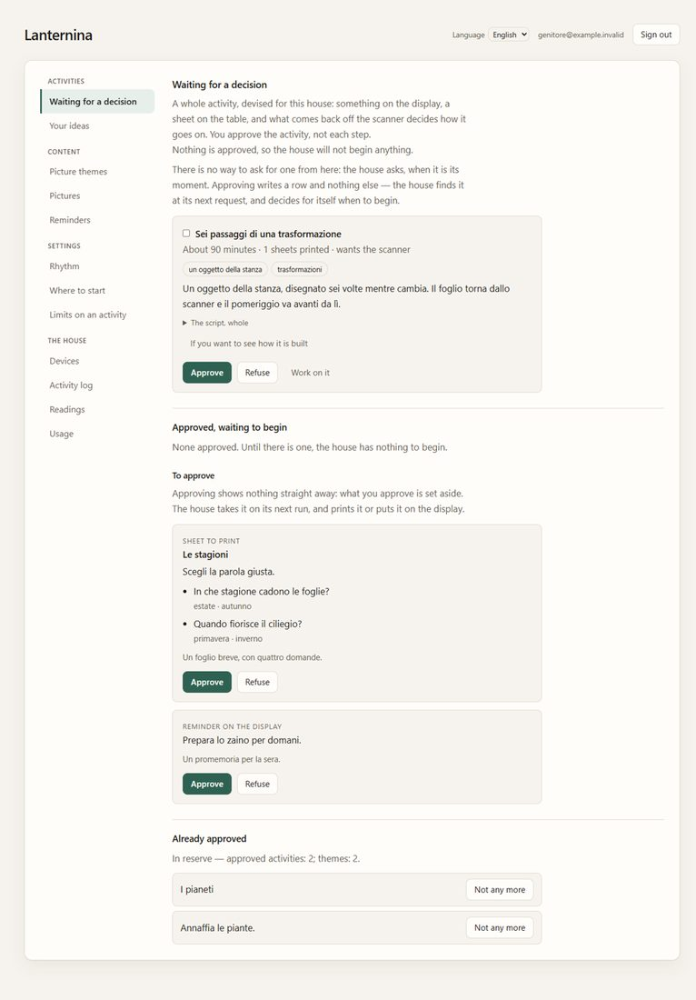

Lanternina
Lanternina inventa un pomeriggio per un adolescente, lo fa approvare a un genitore, e poi lo fa succedere in una stanza vera: su carta, su schermi che non si scorrono, e con una penna in mano.
Lanternina invents an afternoon for an adolescent, has a parent approve it, and then runs it in a real room: on paper, on screens that do not scroll, and with a pen in hand.
Non c'è un'applicazione da aprire, non c'è niente a cui accedere, e non c'è niente da scorrere.
There is no application to open, nothing to log in to, and nothing to scroll.

Comincia sul tavolo
It starts on the table
Il pomeriggio arriva dove sei già. Una pagina esce dalla stampante — una mappa, una scheda, l'etichetta di un museo, il foglio di un taccuino — disegnata per intero, una volta sola, per quel pomeriggio lì. Su uno schermo appeso al muro compare una frase, e poi lo schermo resta fermo.
The afternoon arrives where you already are. A page comes out of the printer — a map, a dossier, a museum label, a leaf from a notebook — drawn whole, once, for that afternoon and no other. A sentence appears on a screen on the wall, and then the screen holds still.


Quello che scrivi decide come va avanti
What you write decides how it goes on
Rimetti il foglio sullo scanner. Viene letto confrontandolo con com'era prima di essere riempito, e le pagine dopo vengono scritte a partire da quello che c'è sopra, mentre il foglio è ancora sul tavolo.
You put the sheet back on the scanner. It is read against how it looked before anybody filled it in, and the pages after it are written from what is on it, while the sheet is still on the table.
Quello che hai scritto non viene conservato. Viene letto, serve per il momento dopo, e poi non c'è più. L'unica traccia di com'è andato un pomeriggio è la carta, e la carta resta a chi l'ha riempita.
What you wrote is not kept. It is read, it decides the next moment, and then it is gone. The only account of how an afternoon went is the paper, and the paper belongs to the person who filled it in.

Finisce all'ora che avete deciso
It ends at the hour you agreed on
Mezz'ora prima dell'ora fissata dal genitore, il pomeriggio comincia a chiudersi. Arriva alla stessa fine a cui sarebbe arrivato comunque, e nessuno schermo dice che è stato accorciato.
Thirty minutes before the hour the parent set, the afternoon begins finding its way out. It reaches the same ending it would have reached anyway, and no screen ever says that it was shortened.
Il genitore decide
The parent decides
Tutto quello che il sistema inventa è una proposta, finché un genitore non la approva. Il genitore scrive i limiti con parole sue, sceglie i giorni e le ore, e guarda quello che è stato preparato prima che entri in casa. Niente comincia da solo.
Everything the system invents is a proposal until a parent approves it. The parent writes the limits in their own words, chooses the days and the hours, and reads what has been prepared before it reaches the room. Nothing starts on its own.

Quello che non fa
What it does not do
- Nessuna serie di giorni da non interrompere, nessun obiettivo giornaliero, niente tenuto da parte per farti tornare.
- Nessun punteggio, nessun voto, nessuna pagella: niente che descriva chi sei arriva su un foglio o su uno schermo.
- Nessuna notifica perché è da un po' che non ti fai vedere.
- Nessuna misura di quanto tempo ci hai passato.
- No run of days to keep alive, no daily goal, nothing withheld to bring you back.
- No score, no grade, no report card: nothing describing who you are reaches a sheet or a screen.
- No notification because you have not been seen for a while.
- No measure of how long you spent on anything.
Smettere è un finale accettabile. Non è una buona intenzione: sono controlli automatici che rifiutano quel vocabolario, e che falliscono se qualcuno prova a rimetterlo dentro.
Stopping is a legitimate ending. That is not an intention: it is automated checks that refuse the vocabulary, and that fail if somebody puts it back.
Non è un prodotto
It is not a product
Lanternina è un progetto, costruito in una casa: le cornici sono stampate in 3D e i pezzi montati a mano. Non si compra, non c'è una lista d'attesa e non raccoglie iscrizioni. Il codice è pubblico, insieme alle misure e a quello che ancora non funziona.
Lanternina is a project, built in a house: the frames are 3D printed and the parts are assembled by hand. It is not for sale, there is no waiting list, and it collects no sign-ups. The code is public, along with the measurements and the parts that do not work yet.
Il codice The code Come funziona, con le fotografie How it works, in pictures Il pannello del genitore The parent's panel